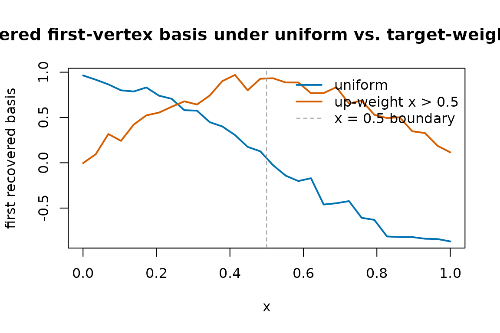

What grid_weights does
MetaHunt represents every study-level function by its values on a
shared grid x_1, ..., x_G. Distances between two functions
f and h are computed in a weighted L^2
sense:
||f - h||^2 = sum_j w_j * ( f(x_j) - h(x_j) )^2The vector w = grid_weights is exactly that vector of
weights — one non-negative number per grid point. It defines the measure
mu that the inner product
<f, h>_{L^2(mu)} = sum_j w_j * f(x_j) * h(x_j)is taken with respect to. Every routine in MetaHunt that talks about
“distance between functions” or “norm of a function” — basis hunting,
constrained projection, conformal pointwise scores — uses the same
grid_weights you supply.
When the default is fine
The default is grid_weights = NULL, which inside the
package becomes the uniform vector rep(1 / G, G). Every
grid point counts equally.
This is the right choice when the grid itself is a
representative sample from the population whose functional you
care about. For example, if you sub-sampled the grid from a held-out
target-population cohort with build_grid(), the empirical
distribution of the grid already encodes the target measure, and uniform
grid_weights simply averages over that empirical
distribution.
In short: if your grid was sampled from population P and
you want distances to reflect P, leave
grid_weights = NULL.
When non-uniform grid_weights matter
You should override the default when the grid distribution does not match the population whose distances you care about. Two common scenarios:
- The grid was sampled from a source population (or a public
reference like NHANES) but you want distances to reflect a
target population. Pass
grid_weightsproportional to the target density evaluated at each grid point. - You care about a sub-region of covariate space (e.g. only patients
with
age > 65). Setgrid_weights[j]to0outside the sub-region and to the target density inside.
grid_weights does not need to sum to 1
— only its relative magnitudes matter inside dfspa() and
project_to_simplex(). The default wrapper in
apply_wrapper() divides by sum(grid_weights),
so weighted means come out on the natural scale regardless of
normalisation.
A worked comparison: uniform vs non-uniform
Here we generate the same data twice — m = 40 studies,
G = 30 grid points — and run dfspa() with two
different grid_weights. The first run is uniform; the
second up-weights the right half of the grid by a factor of about 5.
m <- 40
G <- 30
x <- seq(0, 1, length.out = G)
# True bases on the grid.
basis <- rbind(sin(pi * x), cos(pi * x), x)
# Mixing weights driven by two latent covariates.
W <- data.frame(w1 = rnorm(m), w2 = rnorm(m))
beta <- cbind(c(1, -0.8), c(-0.5, 1.2), c(0, 0))
eta <- as.matrix(W) %*% beta
pi_true <- exp(eta) / rowSums(exp(eta))
F_hat <- pi_true %*% basis + matrix(rnorm(m * G, sd = 0.05), m, G)
dim(F_hat)
#> [1] 40 30Now the two grid_weights choices:
gw_uniform <- rep(1 / G, G)
# Up-weight x > 0.5 by ~5x. Renormalisation is optional but tidy.
gw_right <- ifelse(x > 0.5, 5, 1)
gw_right <- gw_right / sum(gw_right) * G # comparable scale, optional
fit_unif <- dfspa(F_hat, K = 3, grid_weights = gw_uniform, denoise = FALSE)
fit_right <- dfspa(F_hat, K = 3, grid_weights = gw_right, denoise = FALSE)
# Index sets selected can differ.
fit_unif$original_indices
#> [1] 28 18 14
fit_right$original_indices
#> [1] 18 28 14A single overlay plot of the two recovered first basis functions makes the qualitative effect visible — the right-weighted run pays more attention to the right half of the grid when ranking which study is the “extreme” one to anchor:
matplot(
x,
cbind(fit_unif$bases[1, ], fit_right$bases[1, ]),
type = "l", lty = 1, lwd = 2,
col = c("#0072B2", "#D55E00"),
xlab = "x",
ylab = "first recovered basis",
main = expression(
"Recovered first-vertex basis under uniform vs. target-weighted " ~ L^2 * (mu)
)
)
abline(v = 0.5, lty = 2, col = "grey60")
legend("topright",
legend = c("uniform", "up-weight x > 0.5", "x = 0.5 boundary"),
col = c("#0072B2", "#D55E00", "grey60"),
lty = c(1, 1, 2), lwd = c(2, 2, 1), bty = "n")
The two curves usually agree closely on the well-sampled regions and
diverge where the weights differ most. The takeaway is not that
one choice is right and the other wrong — it is that
grid_weights quietly determines which features of the
function get prioritised.
Practical guidance
- Start with the default. Only switch if you have a concrete reason (target distribution, sub-region focus, deliberate down-weighting of unreliable grid points).
- Make
grid_weightsstrictly positive on the support you care about. Zero weight at a grid point removes it from every distance, norm, and mean computation in the package. This includes the d-fSPA denoising step, which uses the same L²(μ) inner product to define neighbourhoods. - Keep the same
grid_weightsacrossdfspa(),project_to_simplex(), and the conformal routines for a given analysis. Mixing differentgrid_weightsbetween steps is rarely what you want — it changes the meaning of “distance” mid-pipeline. - If you only care about a scalar functional (e.g. an ATE), passing a
wrapperis often a cleaner solution than re-weighting the grid. Seevignette("wrapper-scalar").
Functions that accept grid_weights
The argument has the same meaning everywhere it appears:
dfspa(F_hat, K, grid_weights = NULL, ...)project_to_simplex(F_hat, bases, grid_weights = NULL, ...)-
apply_wrapper(F_mat, wrapper = NULL, grid_weights = NULL)— used for the default weighted-mean wrapper. -
metahunt(F_hat, W, K, ..., grid_weights = NULL)— passes the weights through todfspa()andproject_to_simplex(). -
split_conformal(...),cross_conformal(...),conformal_from_fit(...)— all acceptgrid_weightsfor the pointwise conformity score and for the default wrapper when none is supplied. -
reconstruction_error_curve(),cv_error_curve(),select_denoising_params()— propagategrid_weightsto the underlyingdfspa()calls.
If a function does not accept grid_weights directly, it
is because it operates on already-projected weights pi_hat
(e.g. fit_weight_model()) and therefore does not need the
grid measure.